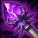

起手組件
 紅水晶
紅水晶先補生命讓第一波近身換血更穩，也方便往時光之杖等半坦核心延伸。

校正至 7.3d · 2026-10-28。Tier與配置是本站的模式策略判斷，不是官方勝率排名。
起手組件 → 一階鞋或首件核心（依壓力調整）→ 核心成裝 → 鞋子升級 → 情境後續裝。五件成裝加一雙鞋；鞋子兩張圖表示升級前後，不是同時購買兩雙。
先補生命讓第一波近身換血更穩，也方便往時光之杖等半坦核心延伸。

生命與魔力支持持續作戰，盡早完成疊層。

用緩速延長敵人在大絕範圍內的時間。

持續作戰核心；進場前先等關鍵控制交掉。

斯溫：前排持續戰鬥的生命與續航格；必須能留在敵方英雄附近，不能代替瞬間爆發防護。

斯溫：搭配已有的生命與雙防，接戰疊層後擴大坦度；不是沒有其他防裝時的一件萬能雙抗。

前期補魔力與法穿，讓技能循環與傷害更舒服。

斯溫：魔力之靴升級，提供法傷路線的穿透與續航；需按敵方魔防與生存壓力決定完成時機。

保留最可靠的進退與關鍵技能銜接；雪球戰車進場後仍可用閃現修正位置。

雪球命中後可等待隊友跟上再進場，讓近戰英雄在單線拉扯中擁有穩定的接戰與追擊角度。

半坦預設靠持續接戰發揮；爆發方案改用相位衝擊。

大絕是最核心的團戰技能，強化大招循環收益很高。
技能加速讓拉人、Q 技與大絕循環更順。

開召喚師技能後的移速能幫你黏住敵人。

進場時降低第一輪爆發，避免還沒吸起來就被秒。
1 技 > 2 技 > 3 技
ARAM 開局三個基礎技能各點 1 級，之後主升 1 技、次升 2 技；大絕能點就點。
前期先靠遠距技能疊靈魂與換血，不要太早走到最前面。等敵人被控或血線下降再接拉人。
時光與瑞萊成形後，等對手第一輪控制交掉再開大進場；避免被拉開或單獨吃滿集火。
無盡絕望與雅瑪蘭提供站場能力，但大絕回復已削弱，優先黏住可持續接觸的目標。

敵方爆發高
斯溫：在對方關鍵爆發或集火時開啟停滯；停滯期間不能輸出，也需安排結束後的位置。

敵方治療多
替換無盡絕望，以魔法傷害施加重創。

隊伍已有足夠前排
替換雅瑪蘭守護像；僅在能安全站場時選擇。
己方已有可靠前排，能安全輸出或主要目標為脆皮時。
情境配置，與預設整套擇一使用。

情境配置，與預設整套擇一使用。
情境配置，與預設整套擇一使用。
情境配置，與預設整套擇一使用。
斯溫：在對方關鍵爆發或集火時開啟停滯；停滯期間不能輸出，也需安排結束後的位置。

情境配置，與預設整套擇一使用。
情境配置，與預設整套擇一使用。
情境配置，與預設整套擇一使用。
情境配置，與預設整套擇一使用。
情境配置，與預設整套擇一使用。
以技能連段和大絕二段為輸出重點；大絕持續吸血已削弱，不用這套獨自承傷。
標準 ARAM 最後可追溯倍率：目前未查到 7.2b 對標準 ARAM 的斯溫專屬追加修正，本站以通用 100% 基準呈現；AAA ARAM 的獨立修正不混入本頁。 本輪核對至7.3d，未以符文大亂鬥倍率覆蓋；官方未提供本英雄完整新版倍率總表，若遊戲內不同以當局模式增益為準。
標準 ARAM 以半坦站場為預設；等敵方首輪控制交掉再開大，配合瑞萊留人。隊伍已有足夠前排時，也可選擇下方魔攻爆發方案。
實戰使用方式：看遊戲增幅卡片下方的官方分類 → 點相同分類 → 優先看 S+／S／A；再依本局增幅方向選擇對應出裝路線。
核心
一技能與大絕都能持續輸出，技能型增幅能穩定轉成傷害與冷卻收益。
核心
多段技能與長時間大絕非常適合連續技能命中與大絕強化效果。
高適配
拉人與定身能穩定觸發控場增幅，幫助斯溫把敵人留在大絕範圍。
高適配
體型、生命與雙防能直接提高大絕期間的前排容錯與吸血時間。
適配
技能暴擊、大絕強化、保命與持續傷害型單卡都能提高斯溫上限。
適配
持續施法會消耗魔力，魔力循環有助於長團持續輸出。
技能／雷霆／體型增幅多
7.2e 改為生命、控場與雙防站場；再依實際增幅調整，舊增幅分類評級尚未全量重審。 本路線已同步7.3c的一般裝備；增幅專屬替換另依抽卡決定。
生命與魔力支持持續作戰，盡早完成疊層。
用緩速延長敵人在大絕範圍內的時間。
持續作戰核心；進場前先等關鍵控制交掉。
斯溫：前排持續戰鬥的生命與續航格；必須能留在敵方英雄附近，不能代替瞬間爆發防護。
斯溫：搭配已有的生命與雙防，接戰疊層後擴大坦度；不是沒有其他防裝時的一件萬能雙抗。
前期補魔力與法穿，讓技能循環與傷害更舒服。
斯溫：魔力之靴升級，提供法傷路線的穿透與續航；需按敵方魔防與生存壓力決定完成時機。
需要更久黏住敵人
7.2e 改為生命、控場與雙防站場；再依實際增幅調整，舊增幅分類評級尚未全量重審。 本路線已同步7.3c的一般裝備；增幅專屬替換另依抽卡決定。
生命與魔力支持持續作戰，盡早完成疊層。
用緩速延長敵人在大絕範圍內的時間。
持續作戰核心；進場前先等關鍵控制交掉。
斯溫：前排持續戰鬥的生命與續航格；必須能留在敵方英雄附近，不能代替瞬間爆發防護。
斯溫：搭配已有的生命與雙防，接戰疊層後擴大坦度；不是沒有其他防裝時的一件萬能雙抗。
前期補魔力與法穿，讓技能循環與傷害更舒服。
斯溫：魔力之靴升級，提供法傷路線的穿透與續航；需按敵方魔防與生存壓力決定完成時機。
分類與單卡評級是本站條件式建議。新卡完整效果未核實時不補造數值；當局抽到的卡片會改變優先順序。
7.3d／2026-10-28：本輪核對公告共通差異、現行裝備與符文引用，保留 v123 的既有攻略。標準 ARAM 倍率沿可追溯歷史基準，未套用符文大亂鬥專屬倍率；Tier 為本站建議，非新版勝率或全技能實測。